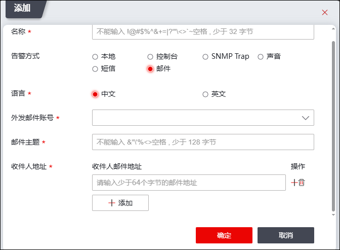
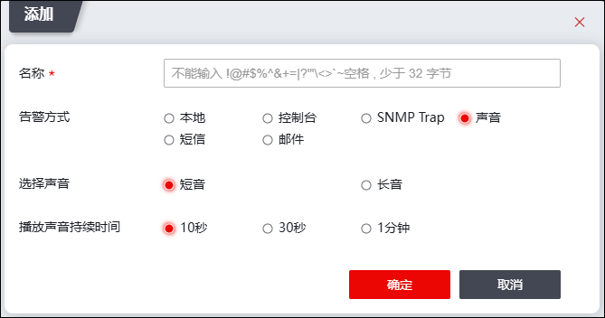
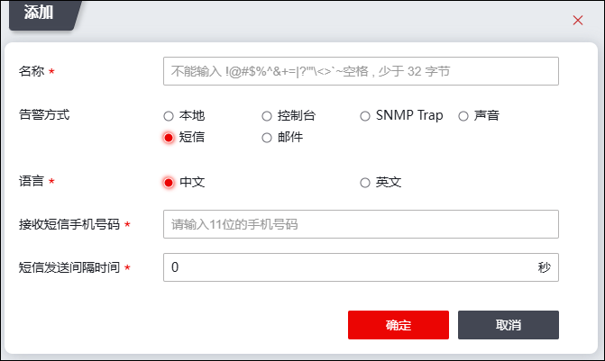

NGFW具体支持以下多种告警方式：
l邮件告警（发送电子邮件到用户指定的电子邮件地址）
l声音告警（通过NGFW的内置扬声器告警）
l控制台告警（发送告警信息到Console控制台）
lTP告警（向联动的NGTP设备发送告警）
lSNMP Trap告警（通过发送SNMP TRAP消息到SNMP陷阱主机告警）
l短信告警（通过发送短信告警）
l本地告警（在“告警查看”页签查询）
告警类型关联了告警方式后，告警方式才能生效，告警类型关联告警方式的介绍详见 告警设置。
配置告警方式的操作步骤如下：
| 步骤1 | 选择 。 |
| 步骤2 | 点击“添加”，弹出“添加告警方式”窗口，弹出窗口界面如下图所示。 |

在“告警类型”选择告警方式：“邮件”、“声音”、“本地”、“控制台”、“NGTP”、“SNMP Trap”以及“短信”，选择不同的告警方式将出现不同的参数项。
1）选择“邮件”，界面如上图所示。
在设置邮件告警信息时，各项参数的具体说明如下表所示。
参数 |
说明 |
|---|---|
告警名称 |
必填项，设置邮件告警规则的名称。 |
告警类型 |
选择报警方式为邮件报警。 |
邮件外发账号 |
必选项，在下拉列表选择已配置的邮件系统。关于邮件配置的详细信息，可参见 外发邮件账号。 |
邮件主题 |
设置电子邮件主题。 |
收件人地址 |
设置接收告警信息的电子邮件地址，如 xx@topsec.com.cn。NGFW支持同时设置多个收件人地址。 |
2）选择“声音”，界面如下图所示。

在设置声音告警信息时，各项参数的具体说明如下表所示。
参数 |
说明 |
|---|---|
名称 |
必选项，设置声音告警规则的名称。 |
报警方式 |
选择报警方式为声音报警。 |
选择声音 |
选择声音报警类型，可选择：短音、长音。 |
播放声音持续时间 |
设置报警声音持续的时间，可选择：10秒、30秒、1分钟。 |
3）选择“控制台”告警，“告警名称”处填写用户指定的告警规则的名称。
4）选择“SNMP Trap”告警，在“告警名称”处填写用户指定的告警规则的名称，点击【确定】按钮，NGFW即可将告警信息发送到SNMP陷阱主机，具体请参见 SNMP。

5）选择“短信”告警，界面如下图所示。

在设置短信告警信息时，各项参数的具体说明如下表所示。
参数 |
说明 |
|---|---|
名称 |
必填项，设置声音告警规则的名称。 |
报警方式 |
选择报警方式为短信报警。 |
语言 |
选择报警语言，可选择中文、英文。 |
接收短信手机号码 |
必填项，设置接收告警短信的手机号码。 |
短信发送间隔时间 |
必填项，设置两次短信告警之间的间隔，单位：秒；取值范围：0-3600,0表示不设限制。 |
|
²只有在完成短信告警的相关配置后，NGFW才可进行短信报警。关于短信报警配置的详细信息请参见 短信。 |
6）本地告警，告警方式选择“本地”告警即可。
| 步骤3 | 参数设置完成后，点击【确定】按钮完成告警规则的添加。 |
新添加的规则默认不与任何安全事件关联，需在告警设置页面关联告警类型。